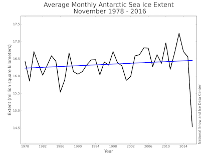
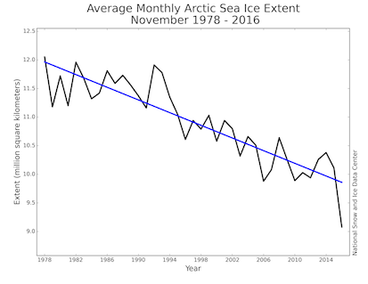
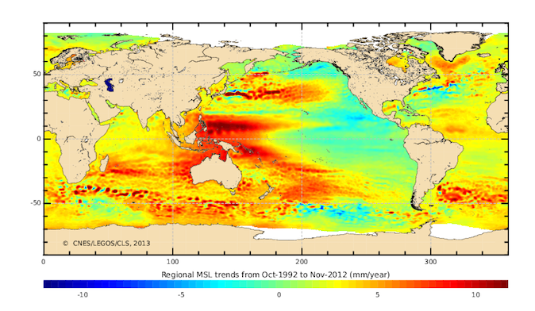
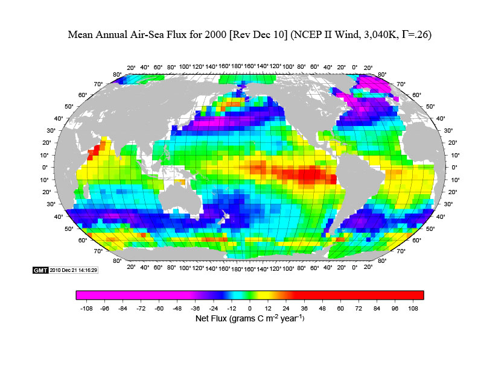
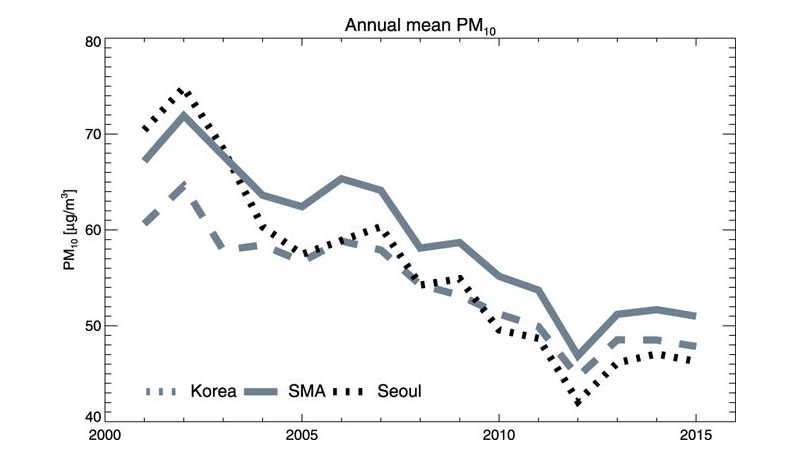

People found a high concentration of plastic debris in the middle of Pacific.
Although those plastic debris are small enough not to be visible with naked eyes, the size of this ‘patch’ can be as big as 700,000 km2, a size of Texas, USA.
Why is there a garbage patch in the middle of Pacific ocean where no human habitats are nearby?
Under the changing climate, Arctic sea-ice and Antarctic sea-ice show very different trend.
While Arctic sea-ice extent has been shrinking over the past few decades, Antarctic sea-ice extend shows the increasing trend.
How can we explain this?

In the 2017, Atlantic hurricane season was one of the most destructive hurricane seasons on record.
Lots of people suffered from floods and wind damages caused by hurricane, and we even saw a high number of death toll.
Is this something to do with global warming?
Tide gauges and satellite observations revealed the global rising sea level trend, and the recent study finds that it has been accelerating in the last decade. (Link)
The sea level trend is quite variable in space with a striking positive trend in the western Pacific. What drives this spatial pattern of the sea level trend?

(Mean sea level (MSL) trend estimated from the satellite observations.)
The use of chlorofluorocarbons (CFCs) caused to ozone loss that impacts back to human by allowing more ultraviolet (UV) light.
Another important impact from the ozone hole is the ability to alter the atmospheric circulation.
The stratosphere becomes cooler when UV light is not absorbed as much as it was with more ozone. This results in larger temperature difference between equator and south pole. How does this change the climate in the Southern Hemisphere?
Approximately 25% of anthropogenic CO2 has been taken up by the ocean. However, this does not mean that the ocean always takes up CO2 from the atmosphere.

For example, the mean air-sea CO2 map reveals that the ocean emits CO2 in the eastern Pacific as well as in the region south of 60 degree S in the Southern Ocean.
What determines this spatial patterns?
It became normal to monitor the air quality before starting the day.
The particulate matter (PM) data in the Seoul Metropolitan Area shows an interesting temporal evolution.
The PM level has been continuously decreased since 2000 before it starts to go up after 2012.
How could we understand and interpret this trend?

(Fig. 1 in Kim et al. (2017), Scientific Reports)
You can choose the subject of the project. Possible subjects are
Team A : Daniel An, Ung Hyun Ka, Junyoung Moon, Seungmin Yu
Team B : Sein Baik, Minyoung Kim, Il Seop Oh, Eun gi Choi
Team C : Woojin Cho, Kwanwoo Kim, Minjoon Park, Jeoungwoo Kim
Team D : Sunghee Choi, Hyeongdo Kim, San Wool Park, Hyojun Seunu
Team E : Jeong Su Choi, Ji Hyun Lee, Sang Wook Park, Dabin Shin
Team F : Su Ji Gwak, Yeji Lee, So Eun Park
Team G : Ji-Su Kim, Min Jae Lee, Wonbum Seo
Please get together with your team members and discuss what topic your group want to explore. You can pick any topics above or find your own topic. The assignment of the topic is first-come, first-served bases. If the topic your team want to do is picked up by another team, then your team have to pick something else. Please let me know the topic of your team before the midterm week.